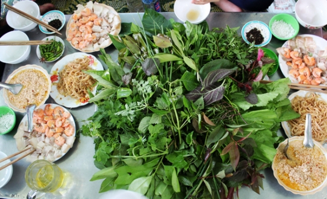

Phở khô Gia Lai còn được gọi là “Phở hai tô” vì nó bao gồm 1 tô phở khô và 1 tô nước dùng đi kèm. Khi ăn, cho tóp mỡ, rau giá, xà lách… lên trên rồi cho tương vào, trộn đều các thành phần lên rồi từ từ thưởng thức. Sợi phở khô khá đặc biệt, dù được làm từ bột gạo nhưng không mềm và dẹp như bánh phở thông thường mà có dáng tròn, mảnh và hơi dai. Nhờ vậy mà khi trộn đều lên, sợi phở rất dễ thấm gia vị nhưng không bị nát.
Theo người dân phố núi, món ăn có nguồn gốc từ những người Bình Định di dân đến Gia Lai, là sự pha trộn giữa mắm cua, thịt ba chỉ, măng, chả, nem chua, da heo chiên giòn, bánh phồng tôm, rau sống… Với mùi hơi khó ngửi đặc trưng, dần dà người ta gọi là bún cua thối để phân biệt với các món bún riêu khác. Tuy nhiên không nhiều khách dám thử bởi mùi thum thủm của cua thối, nhưng nếu đã ăn rồi thì khó lòng mà quên được bởi hương vị rất đặc trưng
Cơm lam hay còn gọi là Cơm nướng ống được coi là món ăn của núi rừng bởi nó chứa đựng sự ngọt ngào của suối và hương vị thơm ngon của loại gạo đặc biệt nơi đây.
Gà nướng mọi ăn với cơm lam được xem như thứ đặc sản đáng tự hào mà người Gia Lai thường giới thiệu với khách phương xa. Gia vị ướp gà là bí quyết để món gà nướng của Gia Lai trở nên quyến rũ. Công thức không được tiết lộ, thế nhưng chỉ cần ngửi mùi khói nướng, người sành ăn đã có thể cảm nhận được hương mật ong, hương tỏi, sả, ngũ vị hương hòa quyện.
Không chỉ ở Kon Tum, đến Pleiku các bạn cũng dễ dàng tìm được và thưởng thức món đặc sản của núi rừng Tây Nguyên này. Gỏi lá ở phố Núi Pleiku nói riêng có tới 30 loại lá khác nhau, thậm chí có nơi có từ 40 đến 50 loại lá. Trong đó có những loại lá quen thuộc như: Cải, tía tô, sung, đinh lăng, mơ, hành, húng… và có cả những loại lá chỉ núi rừng Tây Nguyên mới có.
Tất nhiên, gỏi lá không thể chỉ có lá mà còn có nước chấm được làm từ gạo nếp cho lên men đem ủ với tôm khô, thịt ba chỉ rồi xay nhuyễn. Sau đó người làm nước chấm phi hành thơm cùng mẻ, sa tế, gia vị rồi cho vào hầm tạo nên thứ nước chấm sền sệt, ngon ngất ngây. Cùng với đó, đĩa thức ăn đi kèm quen thuộc đó là thịt ba chỉ luộc thái mỏng, có thêm tôm Biển Hồ, bì lợn luộc và được trang trí nằm gọn giữa một mâm xanh màu lá, liền kề đĩa muối hột, ớt xanh…
Bò một nắng có tên gọi đầy đủ là “Bò một nắng hai sương”, thịt bò chỉ phơi một nắng cho vừa héo nên khi đem nướng trên lửa than đượm thơm ngon lạ lùng. Đây là món ăn được nhiều người ưa thích.

Để món này được thơm ngon đúng điệu, trước hết phải chọn loại bò cỏ tơ, được chăn thả tự nhiên trên các triền núi, mé sông và chỉ chọn phần thịt đùi và thịt thăn để chế biến. Thịt được thái thành những lát vừa phải, ướp thấm tháp với nhiều gia vị như muối, sả, đường, bột ngọt, hạt nêm, ớt khô rồi phơi qua một nắng. Khi ăn du khách nướng trên lửa than, lật trở cho chín đều, se khô và hơi rám cháy là ngon nhất. Món này ăn kèm với muối kiến được làm từ những tổ kiến lấy trên rừng về, làm sạch, giã nhuyễn cùng muối hạt, ớt, lá then len… tạo thành vị cay chua rất độc đáo.
Muối làm từ loại kiến vàng rừng vùng Ayun Pa, Krông Pa có thể khiến nhiều người lắc đầu nguầy nguậy khi nhìn. Nhưng nếu đã nếm qua hương vị hoang sơ này một lần thôi sẽ hiểu vì sao lên Gia Lai nhất định phải mua muối kiến vàng về làm quà hoặc ăn dần. Muối kiến vàng ăn có mùi rất đặc trưng hơi chua chua, nồng nồng, béo béo, ngòn ngọt cay cay của kiến vàng rất bắt mồi với các món nướng hay các loại hoa quả chua.
Heo sọc dưa có nguồn gốc và hương vị như heo rừng được người dân bản địa thuần hóa nuôi thả vườn trong gia đình. Tuy nuôi trong vườn nhà nhưng với lối sống của đồng bào dân tộc Bahnar, Jrai vẫn còn dựa vào thiên nhiên nên loài heo sọc dưa này vẫn được nuôi thả rông như heo rừng và thịt săn, thơm đậm, ngọt như heo rừng vậy, ăn khác hẳn với các loại heo thông thường chúng ta hay dùng.
Từ “lụi” là từ địa phương, thay cho từ “xiên nướng”. Là một món ăn truyền thống dân gian của những người dân vùng đất đỏ. Được nướng trên bếp than hồng ấm áp của những ngày đầu đông lạnh nhẹ, vỏ bánh tráng của lụi càng trở nên giòn tan. Thịt xay, nấm mèo được cuốn trong vỏ bánh cũng tự nhiên dậy mùi bởi lửa nóng khiến bụng người ta không khỏi cồn cào.